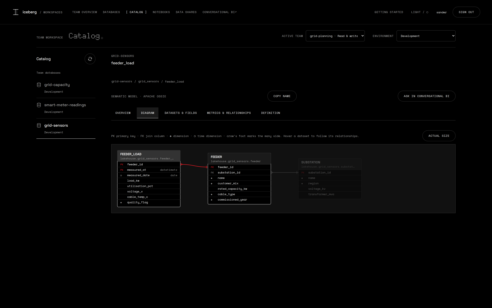
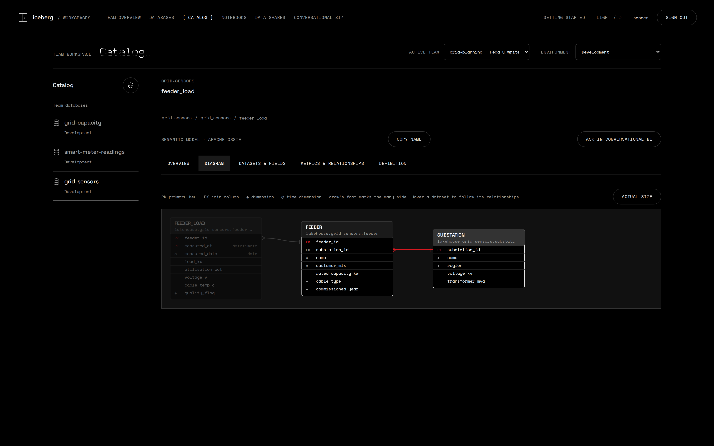

The data shows what is odd. Only the team knows what it means.
End users bring their own tools.
A coding agent finds the database over MCP and loads the sensor export with the DuckDB CLI, with the user's own grants.
The agent looks at the data and asks the owner.
The semantic-model skill profiles the data, interviews the team and proposes a semantic model with agreed metrics, in the open Apache Ossie format.
Every question is tested on the real data.
Keys, joins and each business question run before anything is published. Then the owner approves.
See how the data fits together.
Drawn from the semantic model.



Another team asks a question in plain language.
The LLM only picks names. The SQL comes from the model, the chart from the data.

Share the model with another team, without a copy.
Another team or an outside partner reads the same tables and the same model. Access can be revoked at any time.


Keep the core small.
Extensions such as Conversational BI come in through one versioned contract, the Extension Bridge, with their own release.
Conversational BI
extension
own release
chat · API · MCP
Extension Bridge
/bridge/v1
contract 0.1
read tokens only
Core
catalog · storage
identity · portals
notebooks
Open source.
One command.
Iceberg Data Platform runs on a laptop. The installer adds Conversational BI when asked.